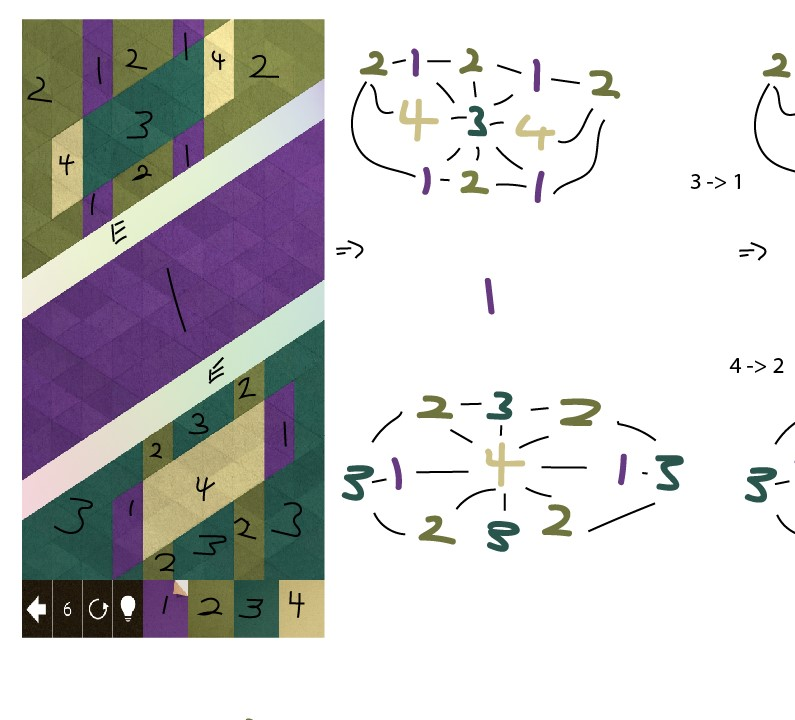

Solving KAMI with Graph Networks

What is KAMI?
KAMI is a 2-dimessional puzzle game. The goal of the game is to tile the screen with only one colour. This is done by selecting a colour and then tapping an area on the screen. THe colour then propigates to its neighbours.
Using Graph Networks
In mathematics a graph is a collection of nodes and edges. You may recongnize that many subway or bus maps are like graph networks. Each stop is a node and the route between them is an edge.